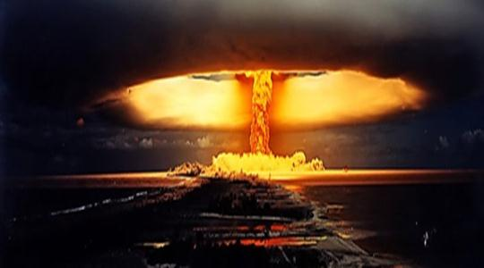
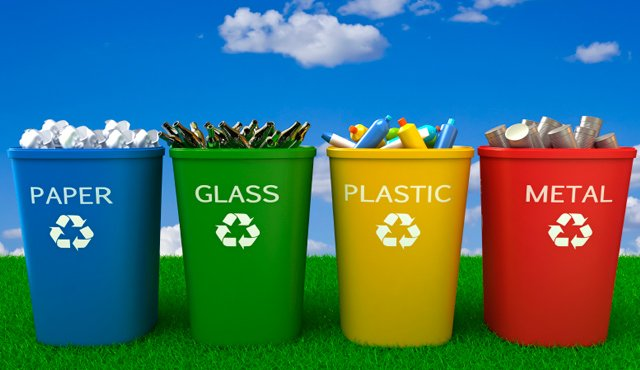
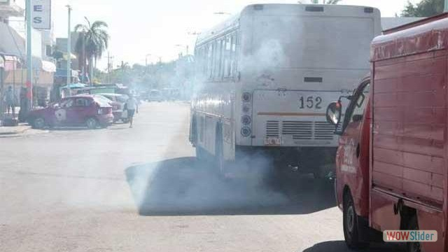

CONTAMINACION DEL PLANETA
Aplicacion tres
Monfil Espinoza Estefania
DEFINICION
La contaminación es la introducción de sustancias u otros elementos físicos en un medio que provocan que éste sea inseguro o no apto para su uso. El medio puede ser un ecosistema, un medio físico o un ser vivo. El contaminante puede ser una sustancia química, energía (como sonido, calor, luz o radiactividad).
Es siempre una alteración negativa del estado natural del medio, y por lo general, se genera como consecuencia de la actividad humana considerándose una forma de impacto ambiental.
La contaminación puede clasificarse según el tipo de fuente de donde proviene, o por la forma de contaminante que emite o medio que contamina. Existen muchos agentes contaminantes entre ellos las sustancias químicas (como plaguicidas, cianuro, herbicidas y otros.), los residuos urbanos, el petróleo, o las radiaciones ionizantes. Todos estos pueden producir enfermedades, daños en los ecosistemas o el medioambiente. Además existen muchos contaminantes gaseosos que juegan un papel importante en diferentes fenómenos atmosféricos, como la generación de lluvia ácida, el debilitamiento de la capa de ozono, y el cambio climático.
Tipos de contaminacion
Diferentes tipos de contaminación están clasificados por su parte que afectan o resultan por las causas de contaminación particulares. Cada uno de estos tipos tiene sus propias causas y consecuencias distintivas. El estudio de la contaminación ambiental ayuda a entender los conceptos básicos con mayor detalle y producir protocolos para los tipos específicos. En consecuencia, los principales tipos de contaminación son:
Contaminación del Agua
Como su nombre lo sugiere, “Contaminación del agua” es el tipo de contaminación que supone la contaminación distintos cuerpos de agua. Varias criaturas acuáticas dependen de estos cuerpos de agua y sus características naturales nutritivos para apoyar su vida.
Contaminación del Agua

Contaminacion del aire
La contaminación del aire es una mezcla de partículas sólidas y gases en el aire. Las emisiones de los automóviles, los compuestos químicos de las fábricas, el polvo, el polen y las esporas de moho pueden estar suspendidas como partículas
Contaminacion del suelo
Las causas más comunes de contaminación del suelo son: Tecnología agrícola nociva (uso de aguas negras o de aguas de ríos contaminados; uso indiscriminado de pesticidas, plaguicidas y fertilizantes peligrosos en la agricultura). Carencia o uso inadecuado de sistemas de eliminación de basura urbana.

Contaminacion del termica
La contaminación térmica se produce cuando un proceso altera la temperatura del medio de forma indeseada o perjudicial.
El medio más habitual donde se produce es en el agua, ya que el aire se disipa más fácilmente. Pero también es posible, por ejemplo, cuando se concentra una gran cantidad de aparatos de aire acondicionado y estos expulsan el calor hacia la calle.
Las centrales térmicas necesitan refrigeración ya que no convierten toda la energía química en electricidad (solo entre un 20-60 %) y el resto en calor. El agua es un buen medio para disipar el calor, es accesible y tiene una gran inercia térmica. Por eso estas centrales se sitúan cerca de un río o el mar.
Contaminacion acustica
Se llama contaminación acústica o contaminación sonora al exceso de sonido que altera las condiciones normales del ambiente en una determinada zona. Si bien el ruido no se acumula, traslada o mantiene en el tiempo como las otras contaminaciones, también puede causar grandes daños en la calidad de vida de las personas si no se controla bien o adecuadamente.
Contaminacion del luminica
La definición de la contaminación lumínica es un tema bastante discutido.
Como contaminación se define como la introducción de luz artificial que produce una degradación de los ecosistemas o el estado natural. Sin embargo, existe también una definición operacional como la emisión de flujo luminoso de fuentes artificiales de luz nocturnas en intensidades, direcciones, rangos espectrales u horarios innecesarios para la realización de las actividades previstas en la zona en la que se instalan las luces.
Contaminacion radiactiva
Esta contaminación puede proceder de radioisótopos naturales o artificiales. La primera de ellas se da cuando se trata de aquellos isótopos radiactivos que existen en la corteza terrestre desde la formación de la Tierra o de los que se generan continuamente en la atmósfera por la acción de los rayos cósmicos.

Aplicacion APP3,MEE
consecuencias de la contaminacion
La contaminación ambiental deteriora cada vez mas a nuestro planeta y a nosotros mismos pues según investigaciones al respirar el aire contaminado esto afecta nuestra salud cardiovascular
por lo que normas estrictas de aire limpio contribuirían a una mejor salud con efectos en gran escala.
Otra consecuencia es el debilitamiento de la capa de ozono, que protege a los seres vivos de la radiación ultravioleta del Sol, debido a la destrucción del ozono estratosférico y esto provoca el calentamiento global.
Mientras los gobernantes deciden cuáles son las medidas que más les favorecen y que se pueden aplicar para reducir la contaminación en nuestro mundo, muchas son las especies que mueren cada día y esto sin tener en cuenta las otras consecuencias de la contaminación que ahora vamos a detallar.
Problemas para la salud: la contaminación hace que las personas estemos cada vez más expuestas a padecer problemas cardiovasculares, con el grave peligro que esto entraña para nuestra salud y vida.
Debilitamiento de la capa de ozono: la capa de ozono es la que nos protege de los rayos del Sol, los cuales pueden llegar a ser mortíferos sin esta capa. la consecuencia de este debilitamiento es que cada vez nos protege menos y, por ende, cada vez tenemos una mayor temperatura en el planeta. Esto no solo hace que cada vez haya más zonas desiertas en las que es imposible vivir, sino que también hace que el hielo en los polos se deshaga y mueran muchas especies por ello. No hace falta mencionar que esto hace subir indudablemente el nivel del mar y que, de seguir así, muchas ciudades costeras se verán arrasadas, quedándose sin playas y sin zona costera.
La contaminación afecta al suelo y al agua: la contaminación al medio ambiente afecta al agua y al suelo, lo que hace que cada vez haya más especies en peligro de extinción. El agua no es potable en una gran cantidad de sitios y el suelo para la siembre no tiene los nutrientes necesarios, lo que hace que cada vez se pueda cultivar menos y que el número de cosechas para nuestro sustento sea cada vez menor.
La contaminación afecta al clima: seguro que ya te has dado cuenta que los inviernos pueden ser mucho más fríos o que los veranos son mucho más calurosos, a la vez que seguro te has dado cuenta que las estaciones como el invierno y el verano pueden ser más largas y que las de temperaturas medias, son cada vez más cortas. Todos estos cambios y los fenómenos que no se habían visto desde hace mucho tiempo o incluso nunca se habían visto son causados por la contaminación.
Calentamiento global
Calentamiento global y cambio climático se refieren al aumento observado en los últimos siglos de la temperatura del sistema climático de la Tierra y sus efectos.
Múltiples líneas de pruebas científicas demuestran que el sistema climático se está calentando. Aunque a menudo la prensa popular comunica el incremento de la temperatura atmosférica superficial como medición del calentamiento global, la mayor parte de la energía adicional almacenada en el sistema climático desde 1970 se ha usado en calentar los océanos. El resto ha fundido el hielo y calentado los continentes y la atmósfera.Muchos de los cambios observados desde la década de 1950 no tienen precedentes en décadas, aun milenios.

Aplicacion APP3,MEE
Las tres "R"
La regla de las tres erres, también conocida como las tres erres de la ecología o simplemente 3R o También las tres erres, es una propuesta sobre hábitos de consumo, popularizada por la organización ecologista Greenpeace, que pretende desarrollar hábitos como el consumo responsable. Este concepto hace referencia a estrategias para el manejo de residuos que buscan ser más sustentables con el medio ambiente y específicamente dar prioridad a la reducción en el volumen de residuos generados
Reducir
Cuando hablamos de reducir lo que estamos diciendo es que se debe tratar de reducir o simplificar el consumo de los productos directos, o sea, todo aquello que se compra y se consume, ya que esto tiene una relación directa con los desperdicios, a la vez que también la tiene con nuestro bolsillo. Por ejemplo, en vez de comprar 6 botellas pequeñas de una bebida, se puede conseguir una o dos grandes, teniendo el mismo producto pero menos envases sobre los que preocuparse.
Reutilizar
Al decir reutilizar, nos estamos refiriendo a poder volver a utilizar las cosas y darles la mayor utilidad posible antes de que llegue la hora de deshacernos de ellas, dado que al disminuir el volumen de la basura.
Esta tarea suele ser la que menos atención recibe y es una de las mas importantes, que también ayuda mucho la economía en casa.

Reciclar
La ultima de las tareas es la de reciclar, que consiste en el proceso de someter los materiales a un proceso en el cual se puedan volver a utilizar, reduciendo de forma verdaderamente significativa la utilización de nuevos materiales, y con ello, mas basura en un futuro.

Aplicacion APP3,MEE
Medidas preventivas
Crear conciencia ciudadana.
No quemar ni talar plantas.
Colocar la basura en los lugares apropiados.
Regular el servicio de aseo urbano.
Controlar el uso de fertilizantes y pesticidas.
Crear vías de desagüe para las industrias que no lleguen a los mares o ríos utilizados para el servicio o consumo del ser humano o de los animales.
Controlar los derrames accidentales de petróleo.
Controlar los relaves mineros.
Reciclar objetos (darles un nuevo uso).
Tomar y generar conciencia de lo que está sucediendo.
Realizar campañas de apoyo.
Evitar el uso de aerosoles.
Tener sentido de responsabilidad.
Programa Nacional de Auditoría Ambiental
A LAS EMPRESAS INTERESADAS EN PARTICIPAR, Y AQUELLAS QUE PARTICIPAN EN EL PROGRAMA NACIONAL DE AUDITORÍA AMBIENTAL.
Como parte de las acciones de difusión y promoción que realiza esta Procuraduría Federal de Protección al Ambiente para que las instalaciones empresariales participen en el Programa Nacional de Auditoría Ambiental y con la finalidad de transparentar la gestión del mismo, se estima oportuno formular los siguientes señalamientos:
Para mas informacion...
ADS
Cualquier práctica que prevenga o reduzca la cantidad de contaminantes que se emite al ambiente, disminuya el consumo de energía, utilización y descarga de agua y generación de desperdicios sólidos. También significa, cualquier práctica que reduzca los peligros a la salud y al ambiente relacionados con la disposición de contaminantes, sin pasar dicho riesgo a los empleados, consumidores o el ambiente.
Para mas informacion...
Fundacion FEPAIS
PROMOTOR AMBIENTAL COMUNITARIO
Convivencia y sustentabilidad ambiental – Por Mag. Marta Lescano, Presidenta de Fundación FEPAIS
El medio ambiente desde una mirada indígena – Por Prof. Gladys Canelo – Representante del Pueblo Nación Comechingón, Miembro de la Comisión Política y Ética de la Mesa de Coordinación Nacional del Consejo de Participación Indígena, Coordinadora del FORO REGIONAL: “Liga de los Pueblos Libres” Córdoba, Agente de Salud Indígena.
Para mas informacion...
Aplicacion APP3,MEE
La contamincación en mi entorno

- 

Propuestas para combatir la contaminacion
-Crear grupos en la comunidad para recoger la basura de las calles y mantener limpias las calles
-No realizar la quema de basura o combustibles
-No dejar las llaves de agua abiertas
-Apagar todas las luces o aparatos electricos mientras estos no sean utilizados
-No tirar desechos en los rioz, barrancas, atc
-Evitar comprar articulos desechables y plastico que no es biodegradable
Aplicacion APP3,MEE